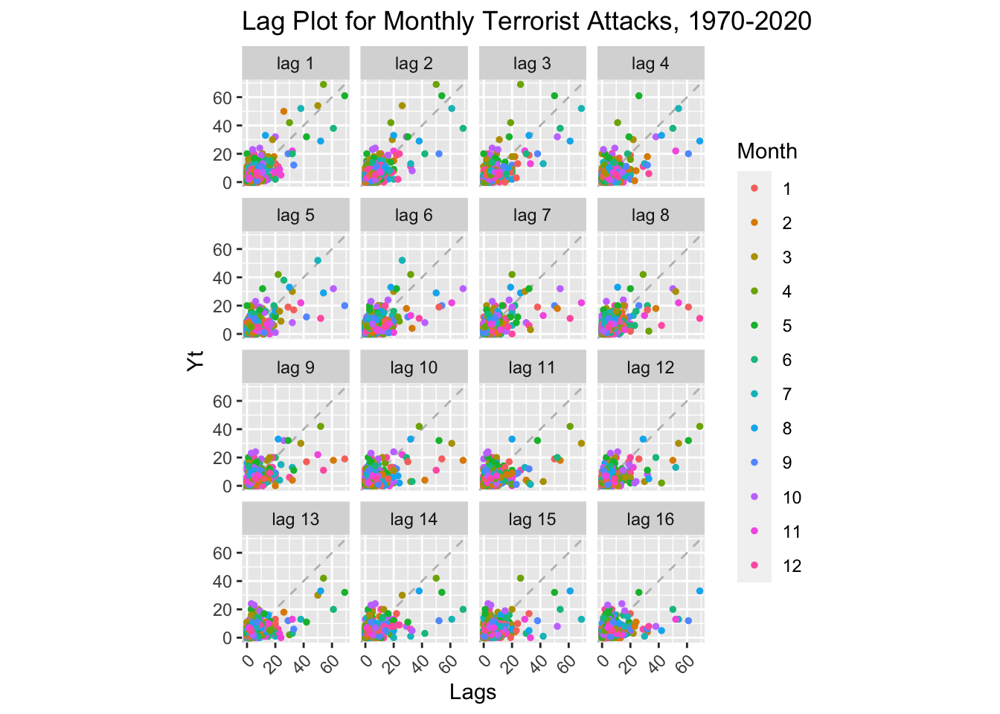
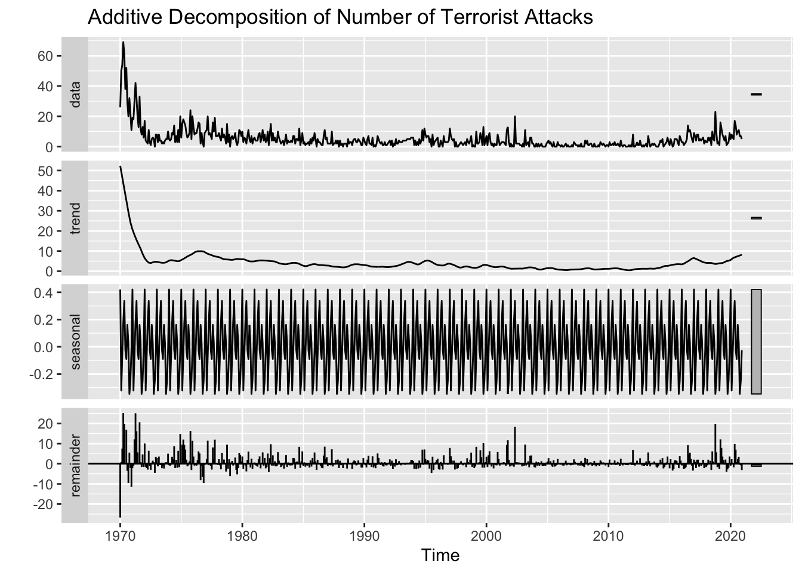
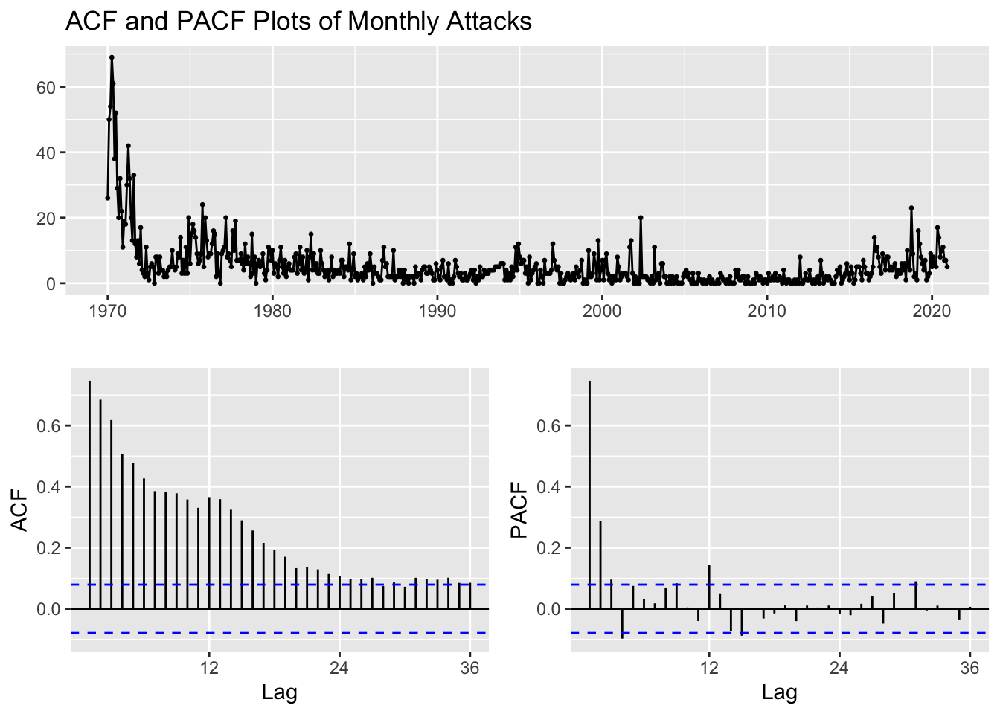
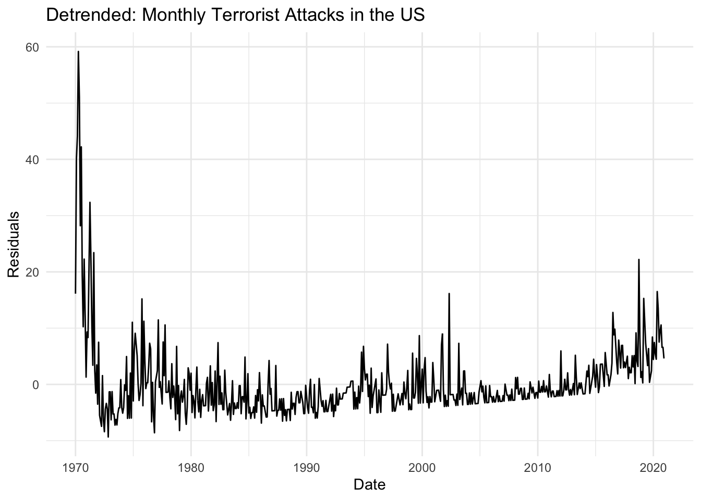
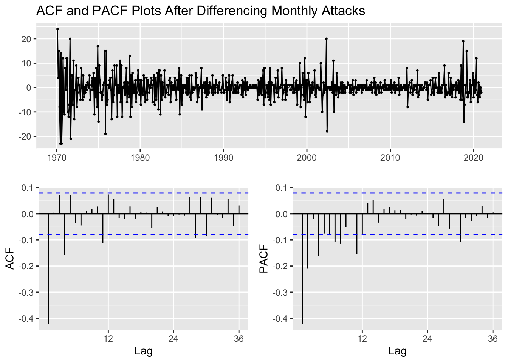
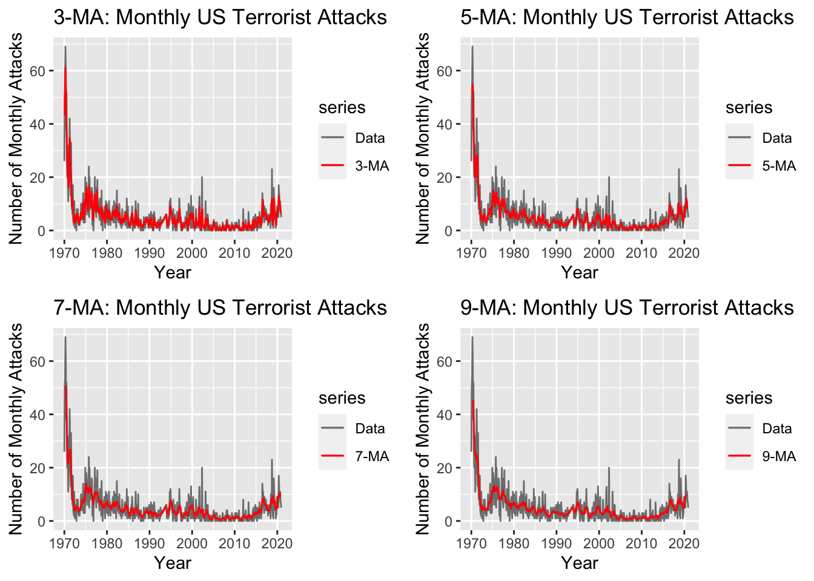
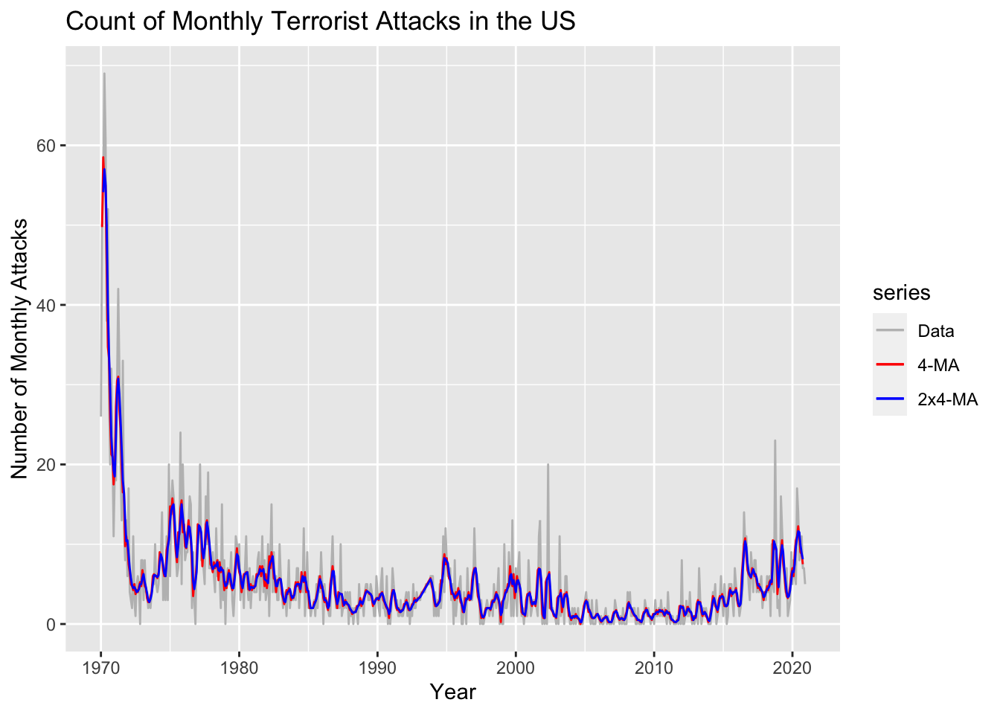
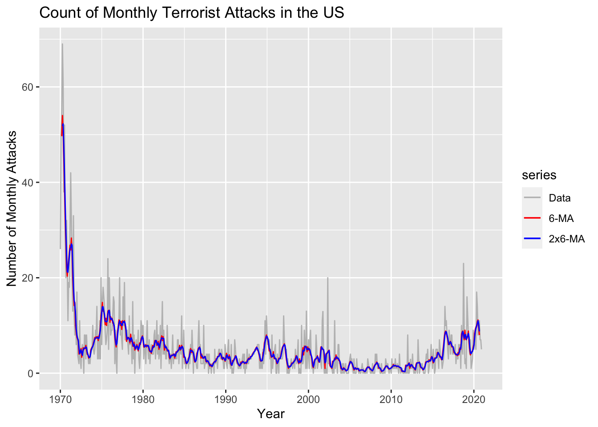
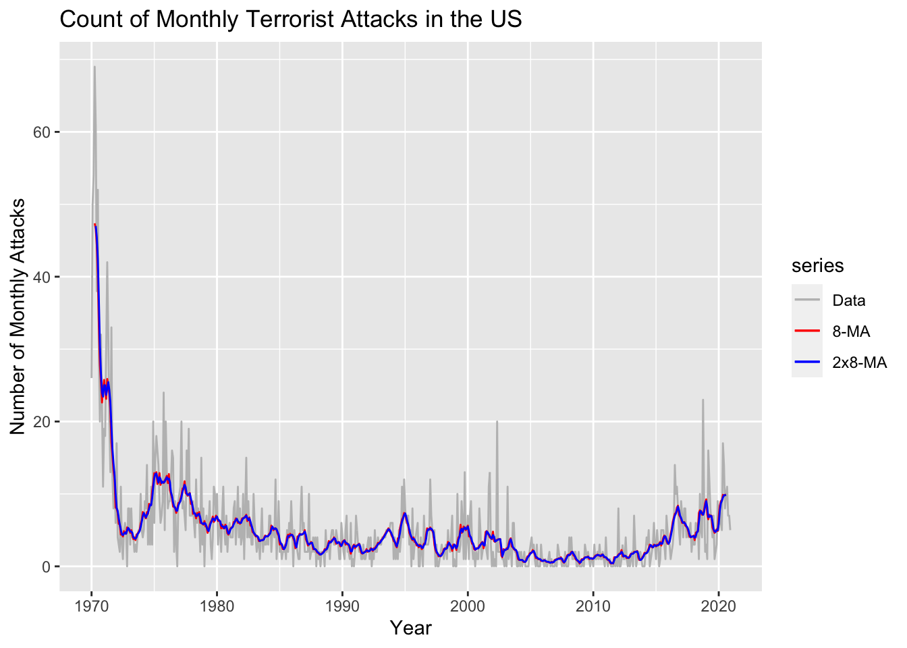

Exploratory Data Analysis
Summary
After producing the data visualizations to gain rudimentary insights about the various datasets collected, the next step of the process is to complete an exploratory data analysis (EDA). Several time series packages exist in the R software that have been utilized to unravel deeper details about the data sets. Some of the famous time series analysis methods used in this section include decomposing and identifying time series components, producing auto-correlation function (ACF) and partial auto-correlation function (PACF) plots, and differencing, and checking for stationarity by the use of the Augmented Dickey-Fuller Test.
Global Terrorism Database Exploratory Data Analysis
Identifying Time Series Components of Monthly Attacks
Please note that as per the GTD Codebook (“Codebook Methodology Inclusion Criteria and Variables - UMD,” n.d.), incidents of terrorism from 1993 are not present because they were lost prior to START’s compilation of the database from multiple data collection efforts. Therefore, monthly attack counts for the year 1993 have been interpolated using the na.approx() function from the zoo library in R. Appendix II of the GTD Codebook provides Country-level statistics for 1993 and for the US, the attack count was 28. However, our interpolated estimates, which took into calculation 1992 and 1994 attack counts, sum up to 54 attacks, which shall be used for EDA.
Also, the data analyzed is count data rather than the measure of a metric. Hence, the results from the time series functions used on this data might not seem like “traditional” outputs seen from data used in class.
Code
(orig_plot <- plot_ly(data=gtd_monthly_attacks_deaths, x=~Date) %>%
add_trace(type = 'scatter', mode = 'lines', y=~num_attacks,
name="Attacks", line = list(color = 'red')) %>%
layout(title="Monthly Count of Terrorist Attacks in the US",
yaxis=list(title=("Count")),
xaxis=list(title=("Date"))) %>%
layout(hovermode = "x"))From the graph, we see an initial downward trend from 1970 to 1972 and an upward trend soon after until 1975. The trend, however, then remains constant until the 2000s. Another upward trend is noticed after 2010 as more attacks were conducted in recent years. Some seasonality is noticed, with more attacks occurring towards the end of Spring (April and May) and end of Fall (August to October), across the whole timeline, but the number of attacks does vary across months, suggesting periodic fluctuations. From these insights, the series does not seem stationary. Moreover, because we cannot identify whether the average length of cycles is longer than the length of a seasonal pattern, the graph is not cyclical. A stationary time series will have no predictable patterns in the long-term, but given the count of attacks now increasing in recent years, one could deduce or forecast patterns in the number of attacks for the next few months ahead from the present (Dec 2020). Lastly, as the time of the series increases, the seasonal variation remains fairly constant, so we should use an additive decomposition. Next, we shall take a look at this series’ lag plots to check for autocorrelations, if any.
Lag Plots of Monthly Attacks
Code
# convert to time series object again
monthly_attacks_ts <- ts(gtd_monthly_attacks_deaths$num_attacks, start = c(1970, 1), frequency = 12)
# plot
gglagplot(monthly_attacks_ts, do.lines=FALSE)+
ggtitle("Lag Plot for Monthly Terrorist Attacks, 1970-2020") +
xlab("Lags") + ylab("Yt") +
theme(axis.text.x=element_text(angle=45, hjust=1))
Concerning the the faceted lag plots of the monthly series, we see a relatively strong positive autocorrelation at lag 1. Thus indicates that there is a strong relationship between the values of the series in adjacent months. Specifically, it suggests that the value of the series in the current month is positively related to the value of the series in the previous month. This can indicate the presence of some underlying trend or seasonality in the data. There is no evidence of negative autocorrelation too. Therefore, this could make a case for weak autocorrelation. As the level of autocorrelation increases, the points shift away from the diagonal; however, the points move closer at lag 12, indicating that . A positive linear trend (i.e. going upwards from left to right) is suggestive of positive autocorrelation.
When comparing the lag plots for the series with different months, there is not much difference, except for a cluster of data points in the bottom left side of the graph, reinforcing our earlier finding that more than half the attacks from 1970 to 2013 took place in 1970. The trend and seasonal components are very much similar and, hence, the plots hint to us that all the series seem to not be stationary.
Decomposing Monthly Attacks
Code
stl(monthly_attacks_ts, t.window=NULL, s.window="periodic", robust=TRUE) %>%
autoplot()+ggtitle("Additive Decomposition of Number of Terrorist Attacks")
ACF and PACF Plots of Monthly Attacks
Code
monthly_attacks_ts %>%
ggtsdisplay(main="ACF and PACF Plots of Monthly Attacks")
The autocorrelation function (ACF) and partial autocorrelation function (PACF) plots are used to help determine the order of an ARMA model. The ACF plot shows the correlation between the time series and its lagged values, while the PACF plot shows the correlation between the time series and its lagged values after controlling for the effects of any intermediate lagged values.
By looking at the ACF, it can be concluded that the series is not Stationary. The dashed blue lines indicate whether the correlations are significantly different from zero. The ACF Plot shows a downward trend in attack counts, with the initial insignificant correlations beginning from lag 24. No clear seasonality is depicted from the ACF plot. If a time series is stationary, its PACF should decline to zero relatively quickly, beyond a certain lag value. On the other hand, if a time series is not stationary, its PACF will show significant autocorrelation for many lag values. The former seems true for these PACF plots, as we see autocorrelations for only lags 1 and 2 in the PACF plot. The PACF does decrease after and stays within the confines of the Confidence Interval, which could mean that it is not significantly different from zero and therefore has no significant correlation with the time series from lag 2 onwards. Therefore, the original series might be weakly stationary!
ADF Test of Monthly Attacks
\(H_0\): The time series is non-stationary. In other words, it has some time-dependent structure and does not have constant variance over time.
\(H_1\): The time series is stationary.
Code
adf.test(monthly_attacks_ts)
Augmented Dickey-Fuller Test
data: monthly_attacks_ts
Dickey-Fuller = -7.3335, Lag order = 8, p-value = 0.01
alternative hypothesis: stationaryBecause the p-value from the ADF test is less than \(\alpha\) = 0.05, we cannot reject the null hypothesis and conclude that the time series is non-stationary.
Detrending Monthly Attacks
Code
fit <- lm(monthly_attacks_ts~time(monthly_attacks_ts), na.action = NULL)
summary(fit)
Call:
lm(formula = monthly_attacks_ts ~ time(monthly_attacks_ts), na.action = NULL)
Residuals:
Min 1Q Median 3Q Max
-9.347 -3.363 -1.524 1.317 59.172
Coefficients:
Estimate Std. Error t value Pr(>|t|)
(Intercept) 376.72017 36.25612 10.39 <2e-16 ***
time(monthly_attacks_ts) -0.18622 0.01817 -10.25 <2e-16 ***
---
Signif. codes: 0 '***' 0.001 '**' 0.01 '*' 0.05 '.' 0.1 ' ' 1
Residual standard error: 6.617 on 610 degrees of freedom
Multiple R-squared: 0.1469, Adjusted R-squared: 0.1455
F-statistic: 105 on 1 and 610 DF, p-value: < 2.2e-16Code
detrended <- autoplot(resid(fit),
main="Detrended: Monthly Terrorist Attacks in the US",
ylab = "Residuals",
xlab = "Date") +
theme_minimal()
detrended
Code
#subplot(detrended, orig_plot, nrows = 2, heights = c(0.5, 0.5))Our trend using OLS was:
\(\hat\mu_t\) = 376.72 - 0.18622t
Therefore, equation of the fit of the underlying stationary process is:
\(\hat{y_t}\) = \(x_t\) + 376.72 - 0.18622t
The Detrended series is very much similar to the original series, signaling that differencing could provide a more stationary transformation. The linear model’s \(R^2\) value is 0.1469, suggesting that the model captures 15% of the variation in prices. Therefore, a quadratic model or first differencing would perhaps provide a better fit.
We then see that, even after detrending, the series contains seasonality, which further reinforces our above point that the linear model does not do very well in capturing the initial decreasing trend and then the increasing trend for recent years. Moreover, the data is not trend stationary, which bolsters the above argument.
ACF and PACF Plots After Differencing Monthly Attacks
Code
monthly_attacks_ts %>% diff %>%
ggtsdisplay(main="ACF and PACF Plots After Differencing Monthly Attacks")
First order differencing performs better than detrending, so we shall use this series in the next section when building our autoregressive models. However, we also saw from the original PACF plot that the PACF declineS to zero relatively quickly than that of the differenced series. Therefore, the original series could also directly be fitted to the autoregressive models.
Simple Moving Average Smoothing
Code
ma3 <- autoplot(monthly_attacks_ts, series="Data") +
autolayer(ma(monthly_attacks_ts,3), series="3-MA") +
xlab("Year") + ylab("Number of Monthly Attacks") +
ggtitle("3-MA: Monthly US Terrorist Attacks") +
scale_colour_manual(values=c("Data"="grey50","3-MA"="red"),
breaks=c("Data","3-MA"))
ma5 <- autoplot(monthly_attacks_ts, series="Data") +
autolayer(ma(monthly_attacks_ts,5), series="5-MA") +
xlab("Year") + ylab("Number of Monthly Attacks") +
ggtitle("5-MA: Monthly US Terrorist Attacks") +
scale_colour_manual(values=c("Data"="grey50","5-MA"="red"),
breaks=c("Data","5-MA"))
ma7 <- autoplot(monthly_attacks_ts, series="Data") +
autolayer(ma(monthly_attacks_ts,7), series="7-MA") +
xlab("Year") + ylab("Number of Monthly Attacks") +
ggtitle("7-MA: Monthly US Terrorist Attacks") +
scale_colour_manual(values=c("Data"="grey50","7-MA"="red"),
breaks=c("Data","7-MA"))
ma9 <- autoplot(monthly_attacks_ts, series="Data") +
autolayer(ma(monthly_attacks_ts,9), series="9-MA") +
xlab("Year") + ylab("Number of Monthly Attacks") +
ggtitle("9-MA: Monthly US Terrorist Attacks") +
scale_colour_manual(values=c("Data"="grey50","9-MA"="red"),
breaks=c("Data","9-MA"))
grid.arrange(ma3, ma5,ma7,ma9, nrow = 2, ncol=2)
Moving Average Smoothing with Windowing (2x4)
Code
monthly_attacks_ts_2 <- window(monthly_attacks_ts,start= c(1970, 1))
ma4 <- ma(monthly_attacks_ts_2, order=4, centre=FALSE)
ma2x4 <- ma(monthly_attacks_ts_2, order=4, centre=TRUE)
MA_2x4=data.frame(monthly_attacks_ts_2,ma4,ma2x4)
knitr::kable(head(MA_2x4), align=rep('c', 3))| monthly_attacks_ts_2 | ma4 | ma2x4 |
|---|---|---|
| 26 | NA | NA |
| 50 | 49.75 | NA |
| 54 | 58.50 | 54.125 |
| 69 | 55.50 | 57.000 |
| 61 | 55.00 | 55.250 |
| 38 | 45.00 | 50.000 |
Code
autoplot(monthly_attacks_ts_2, series="Data") +
autolayer(ma(monthly_attacks_ts_2, order=4, centre=FALSE), series="4-MA") +
autolayer(ma(monthly_attacks_ts_2, order=4, centre=TRUE), series="2x4-MA") +
xlab("Year") + ylab("Number of Monthly Attacks") +
ggtitle("Count of Monthly Terrorist Attacks in the US") +
scale_colour_manual(values=c("Data"="grey","4-MA"="red","2x4-MA"="blue"),
breaks=c("Data","4-MA","2x4-MA"))
In this case, m is even, so it is no longer be symmetric. Therefore, when windowing, we are applying a moving average to a moving average. One reason for doing this is to make an even-order moving average symmetric. Here we have employed a centered 4-month moving average followed by a centered 2-month moving average. Although this helps smooth out both seasonal and longer-term trends in the data, we notice some seasonality still being present in the smoothed overlay. Let’s us try to use other moving averaging windows to obtain a more stationary overlay.
Moving Average Smoothing with Windowing (2x6)
Code
monthly_attacks_ts_2 <- window(monthly_attacks_ts,start= c(1970, 1))
ma6 <- ma(monthly_attacks_ts_2, order=6, centre=FALSE)
ma2x6 <- ma(monthly_attacks_ts_2, order=6, centre=TRUE)
MA_2x6=data.frame(monthly_attacks_ts_2,ma6,ma2x6)
knitr::kable(head(MA_2x6), align=rep('c', 3))| monthly_attacks_ts_2 | ma6 | ma2x6 |
|---|---|---|
| 26 | NA | NA |
| 50 | NA | NA |
| 54 | 49.66667 | NA |
| 69 | 54.00000 | 51.83333 |
| 61 | 50.50000 | 52.25000 |
| 38 | 44.83333 | 47.66667 |
Code
autoplot(monthly_attacks_ts_2, series="Data") +
autolayer(ma(monthly_attacks_ts_2, order=6, centre=FALSE), series="6-MA") +
autolayer(ma(monthly_attacks_ts_2, order=6, centre=TRUE), series="2x6-MA") +
xlab("Year") + ylab("Number of Monthly Attacks") +
ggtitle("Count of Monthly Terrorist Attacks in the US") +
scale_colour_manual(values=c("Data"="grey","6-MA"="red","2x6-MA"="blue"),
breaks=c("Data","6-MA","2x6-MA"))
The moving average did smooth out both seasonal and longer-term trends in the monthly time series. Although, we could still do better by further smoothing out longer-term trends by using a centered 8-month moving average, showcased below.
Moving Average Smoothing with Windowing (2x8)
Code
monthly_attacks_ts_2 <- window(monthly_attacks_ts,start= c(1970, 1))
ma8 <- ma(monthly_attacks_ts_2, order=8, centre=FALSE)
ma2x8 <- ma(monthly_attacks_ts_2, order=8, centre=TRUE)
MA_2x8=data.frame(monthly_attacks_ts_2,ma8,ma2x8)
knitr::kable(head(MA_2x8), align=rep('c', 3))| monthly_attacks_ts_2 | ma8 | ma2x8 |
|---|---|---|
| 26 | NA | NA |
| 50 | NA | NA |
| 54 | NA | NA |
| 69 | 47.375 | NA |
| 61 | 46.625 | 47.0 |
| 38 | 44.375 | 45.5 |
Code
autoplot(monthly_attacks_ts_2, series="Data") +
autolayer(ma(monthly_attacks_ts_2, order=8, centre=FALSE), series="8-MA") +
autolayer(ma(monthly_attacks_ts_2, order=8, centre=TRUE), series="2x8-MA") +
xlab("Year") + ylab("Number of Monthly Attacks") +
ggtitle("Count of Monthly Terrorist Attacks in the US") +
scale_colour_manual(values=c("Data"="grey","8-MA"="red","2x8-MA"="blue"),
breaks=c("Data","8-MA","2x8-MA"))
The above plot employed a centered 8-month moving average followed by a centered 2-month moving average. The output is similar to that of the 2x6-MA. Let’s make our analysis more constrained by fitting 4x3-MA: A centered 3-month moving average repeated four times. This should smooth out both seasonal and shorter-term fluctuations even further, providing the least seasonal moving average out of all the other moving averages applied yet.
Section Code
Code for this section can be found here